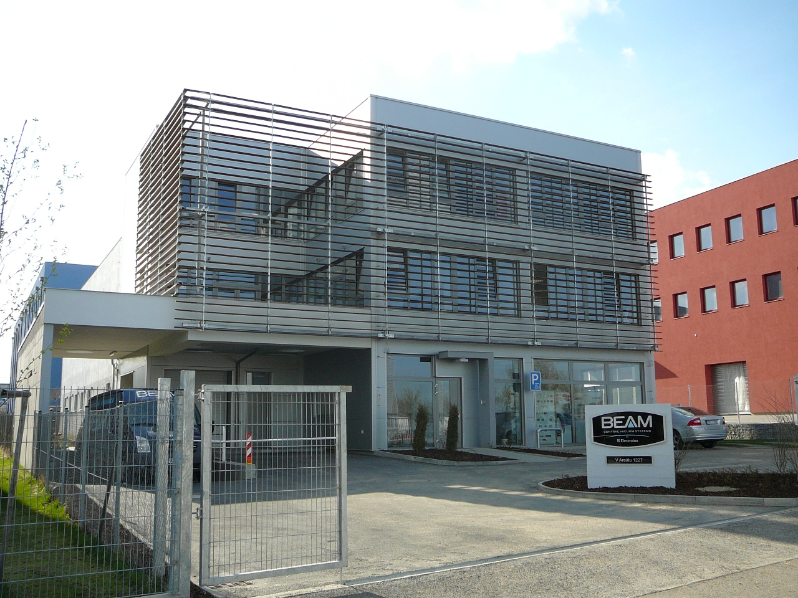

About Fast Clean - Your Cleaning Partner
At Fast Clean, we're not just in the business of selling vacuum cleaners; we're in the business of transforming homes into cleaner, healthier sanctuaries. Our journey began with a simple yet powerful idea: to provide homeowners with the tools they need to maintain an environment that's free from dust, allergens, and pet dander. We believe that a clean home is the cornerstone of a happy, healthy life.
Our Story
Fast Clean was founded in 2014 by a team of passionate individuals who shared a common vision – to revolutionize the way people approach cleaning. We understood that cleaning shouldn't be a chore; it should be a fulfilling experience that improves the quality of life for you and your loved ones. With this vision in mind, we embarked on a journey of research, innovation, and dedication to deliver exceptional cleaning solutions. Over the years, we've consistently pushed the boundaries of technology, engineering, and design to bring you a range of vacuum cleaners that offer peak performance, convenience, and sustainability. Our Values Quality: We are committed to providing you with vacuum cleaners that are engineered to last, designed for superior performance, and built to meet the highest quality standards. Innovation: Our passion for innovation drives us to constantly seek new and better ways to make cleaning easier, more efficient, and more enjoyable for you. Sustainability: We believe in responsible consumption and environmental preservation. Our products are designed with energy efficiency and eco-friendliness in mind. Customer-Centric: Your satisfaction is our priority. We listen to your needs and work tirelessly to meet and exceed your expectations.
